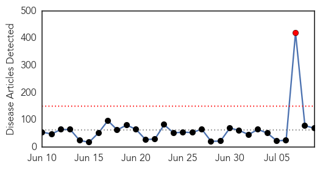

Toggle navigation
Early Warning
Daily Alerts
Unknown
Jul 09, 2014
Compare to:
-
Dengue Fever
Hemmorhagic Fever
Mold/Fungal Infection
Influenza
Meningitis
Pertussis / Whooping Cough
Middle East Respiratory Syndrome
Cholera
Hepatitis
Chikungunya
Yellow Fever
Bubonic Plague
West Nile Virus
Swine Flu
Ebola
Measles
Mumps
30 Day Trends
Web: 1
alerts
, 0
warnings
Twitter: 0
alerts
, 0
warnings
Top Articles:
Showing top 50 articles...
0.926
CDC: Texas patient died of mad cow-related disease
0.919
Wimmera canola growers warned: beet western yellow virus outbreak
0.917
Chicago Tribune
0.917
Chicago Tribune
0.917
Chicago Tribune
0.917
Chicago Tribune
0.917
Chicago Tribune
0.917
Chicago Tribune
0.917
Chicago Tribune
0.917
Chicago Tribune
0.917
Chicago Tribune
0.917
Chicago Tribune
0.913
Forgotten Smallpox Discovered Near D.C.
0.910
The world windows to Thailand
0.910
The world windows to Thailand
0.878
Farmers battle pig virus
0.866
Seven killed in Israeli air strike on at least two Gaza houses -medics
0.866
U.S. Secretary of State Kerry and Treasury Secretary Lew attend the Climate Change issue joint conference with Chinese officials in Beijing
0.866
U.S. Secretary of State Kerry attends the Climate Change issue joint conference in Beijing
0.866
U.S. Secretary of State Kerry speaks during the Climate Change issue joint conference with Chinese officials in Beijing
0.863
Taiwan travelers to Egypt cautioned against malaria
0.846
Smallpox vials suspected to contain live virus
0.838
Forgotten vials of smallpox found in storage room in Maryland lab
0.821
Forgotten Vials of Smallpox Found in Maryland Storage Room
0.803
No link between HPV vaccine and blood clots: study
0.787
TB drug resistance signifies failure
0.755
Smallpox Virus Samples Found In Storage Room At Maryland Laboratory, CDC Says
0.739
Smallpox discovered in lab near D.C.
0.735
U.S. House Republicans seek CDC documents on anthrax scare
0.735
U.S. House Republicans seek CDC documents on anthrax scare
0.735
U.S. House Republicans seek CDC documents on anthrax scare
0.730
Get flu shot or wear mask, Saskatchewan health workers told
0.724
Forgotten vials of smallpox found in storage room
0.724
House Republicans Seek CDC Documents On Anthrax Scare
0.722
Going… going… almost gone: A worm verges on extinction
0.719
Vials of smallpox discovered in US govt storage room
0.712
60-year old Smallpox found at US FDA lab could be viable
0.695
Old vials of smallpox found in US storage room
0.690
Vials of Smallpox Found in Storage Room
0.676
Switzerland halts pork imports from regions of Latvia affected by swine-fever :: The Baltic Course
0.673
Swiss pig ban to affect Latvian farmers
0.660
UPDATE 2-U.S. House Republicans seek CDC documents on anthrax scare
0.659
U.S. House Republicans seek CDC documents on anthrax scare
0.638
Switzerland Halts Pork Imports Over Swine Fever Fears
0.636
Latvia may declare state of emergency to cope with African swine
0.625
Vials of Smallpox Found Unsecured in NIH Bethesda Storage...
0.621
Smallpox specimens found stored in cardboard box
0.612
Conjoined Twin Operation Highlights Zim's Health Care Capacity
0.607
Doctors go on strike against transfer
0.606
UNICEF and WFP stepping up assistance to desperate people in remote areas of South Sudan
Top Tweets:
No tweets found for Jul 09, 2014
Web/News Articles

Tweets
Article Locations
Article Confidences